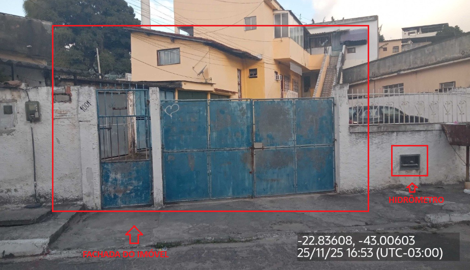
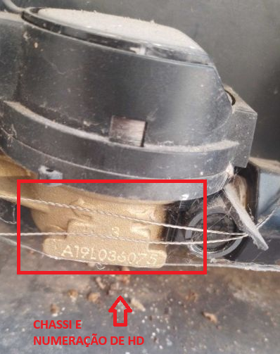
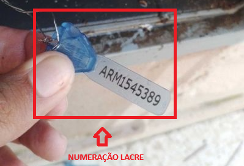
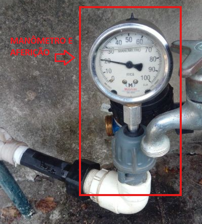

Seguir com o encerramento da OS
Ao executar esta Ordem de Serviço, sua missão é confirmar se o cliente está sendo abastecido de forma
adequada ou identificar possíveis interrupções no fornecimento.
Realize o desmonte do cavalete e meça a pressão com o manômetro, registrando o valor.
Se a pressão estiver zerada ou abaixo de 10 m.c.a, repita a medição nos dois imóveis ao lado.
Essas comparações ajudam a identificar se a falta de água ocorre apenas no imóvel visitado ou se é um problema geral na área.
Se a pressão estiver zerada ou abaixo de 10 m.c.a, repita a medição nos dois imóveis ao lado.
Essas comparações ajudam a identificar se a falta de água ocorre apenas no imóvel visitado ou se é um problema geral na área.
Veja abaixo como as fotos devem ser tiradas para que o registro fique completo e dentro do
padrão
exigido.
 Tire uma foto ampla da frente do imóvel, garantindo que o
ponto onde o HD está localizado
apareça de forma nítida.
 Fotografe a numeração do HD com clareza, garantindo que seja
possível confirmar que é o mesmo
equipamento indicado na Ordem de Serviço.

Fotografe o número do lacre instalado no hidrômetro, deixando-o totalmente legível.

Registre o manômetro no cavalete e a aferição correspondente, garantindo que a leitura fique
totalmente legível.
Realize a aferição de pressão nos imóveis vizinhos, tanto do lado esquerdo
quanto
do lado direito.
Abrir o desdobro de “Desobstrução de Ramal de Água” no adicional
posterior e seguir com o atendimento e finalização do serviço.
Realizar inspeção no local para identificar possíveis
vazamentos.
Quando o vazamento for claramente identificado,
registre
o local e abra desdobro para Reparo de Rede de Água.
Se houver sinais de umidade, mas o ponto exato não
puder
ser visualizado, desdobre para Geofonamento.